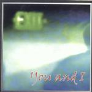

| Artist: | You And I |
| Title: | Exit |
| Label: | Stereo Periferic BGCD 042 |
| Length(s): | 56 minutes |
| Year(s) of release: | 2001 |
| Month of review: | [04/2001] |
| 1) | Ne Félj... / Don't Ever Fear... | 3.36 |
| 3) | Nagyon Figyelj... / Now Listen... | 1.00 |
| 4) | Halálistenségek / Gods Of Death | 12.07 |
| 5) | Ki Vagy... / Who Are You... | 2.17 |
| 6) | Észak / North | 2.40 |
| 7) | Kelet / East | 7.11 |
| 8) | Dél / South | 3.09 |
| 10) | Új Kezdet / Another Beginning... | 1.51 |
The narrator returns on the interlude which takes up the next minute. The continuation is the longest track on the album Gods Of Death. This song has a rather heavy opening and again reveals some of the Yes influences. The vocal part has a strongly pumping sound and the keyboardist throws in some repetitive patterns as well. This is almost hardrock. The vocal melody chorus is spot on, very good and very symphonic as well. The rest of the track proceeds well: some piano, some intertwined angelic vocals from Fanni, and after the piano gets going again we get some complex breaks with some disjointed guitar playing. The keyboards cut in at times, seemingly indifferent to what the rest of the band seems to be doing. The strong melodic chorus returns again at the end, with some really nice percussive bassplaying accompanying it. I guess this final part also refers some to The Flower Kings.
The fifth track is again a short interlude in which the narrator continues his story lined by cosmic keyboards. Ki Vagy? We then come to four tracks named after the ways of the wind: first is the shortish and darkish North. Wordless chants make it up for the most part. You might think Enya here again, but there is something more here. I really like the way the song seems to consist only of somewhat hazy female vocals, but the particular voice of Fanni is also present among them. A very atmospheric piece. East also has some great sounding keyboards. The way this guy works on the emotions is really good. Then the guitar also enters in a moving bluesy fashion. Music to feel alone by. Woven into this is the narrator who continues the story. Then, only then may Fanni start her chanting song. Break time then when the band moves through some reorientations. Wouldn't have surprised if they had called this track I Am/En Vagyok. Some Tibetan monks chanting here in hasty fashion and with the fluting and the repetitive guitar the music gets a bit hectic.
South is a wonderful melodic piece which combines a kind of clapping/acoustic guitar with some great piano and keyboards. West opens with a naked bass line and then erupts into plodding rock. The vocals are rather folky on this one, very light. The music itself is comparable to something like Roundabout and has a strong live feel. The guitar solo and the following vocal part reminded me strongly of Collage.
Before we go the final track Matrix, the narrator concludes his story. Matrix opens percussively. The keyboards also play along in a somewhat percussive fashion. The nthe symphonic prog of the band really gets going and the tracks ends the way the album started, with heavy breathing.